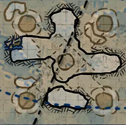

废墟2层地牢
陵墓 (Tombs)Tomb_Center_HR_D.json
Tomb_Center.png | 找到 2 个位置 | 自动范围: ±1600

废墟1层
废弃圣所 (Abandoned_Sanctuary)Ruins_Chapel_HR_D.json
Ruins_Chapel.png | 找到 1 个位置 | 自动范围: ±1600

寂灭回廊 (ForsakenCloister)Ruins_ForsakenCloister_HR_D.json
Ruins_ForsakenCloister.png | 找到 1 个位置 | 自动范围: ±1600

了望塔 (Watchtower)Ruins_Watchtower_HR_D.json
Ruins_Watchtower.png | 找到 2 个位置 | 自动范围: ±1600

水图
废弃舰船 (AbandonedShip_01)ShipGraveyard_AbandonedShip_01_HR_D.json
ShipGraveyard_AbandonedShip_01.png | 找到 2 个位置 | 自动范围: ±1600

珊瑚密林 (ShipGraveyard_CoralForest_01)ShipGraveyard_CoralForest_01_D.json
ShipGraveyard_CoralForest_01.png | 找到 2 个位置 | 自动范围: ±1600

蓝洞 (Hole)ShipGraveyard_Hole_HR_D.json
ShipGraveyard_Hole.png | 找到 7 个位置 | 自动范围: ±6400

岩岛 (ShipGraveyard_RockIsland)ShipGraveyard_RockIsland_D.json
ShipGraveyard_RockIsland.png | 找到 2 个位置 | 自动范围: ±1600

骷髅岛 (ShipGraveyard_SkullIsland)ShipGraveyard_SkullIsland_D.json
ShipGraveyard_SkullIsland.png | 找到 4 个位置 | 自动范围: ±1600

海星谷 (ShipGraveyard_StarfishValley)ShipGraveyard_StarfishValley_D.json
ShipGraveyard_StarfishValley.png | 找到 3 个位置 | 自动范围: ±1600

沉没之船 (ShipGraveyard_SunkenShip_01)ShipGraveyard_SunkenShip_01_D.json
ShipGraveyard_SunkenShip_01.png | 找到 1 个位置 | 自动范围: ±1600

海沟 (ShipGraveyard_Trench)ShipGraveyard_Trench_D.json
ShipGraveyard_Trench.png | 找到 10 个位置 | 自动范围: ±1600

海底洞穴 B (Shipgraveyard_UnderSeaCave_02)Shipgraveyard_TwinChamber_D.json
Shipgraveyard_TwinChamber.png | 找到 2 个位置 | 自动范围: ±1600

海底洞穴 A (ShipGraveyard_UnderSeaCave_01)ShipGraveyard_UnderSeaCave_01_D.json
ShipGraveyard_UnderSeaCave_01.png | 找到 5 个位置 | 自动范围: ±1600